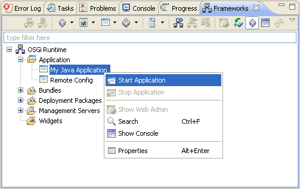

To start an application, select it from the Applications node and use the Start Application option from the popup menu or from the view toolbar. On successful launch, the application's icon will look like this:

Figure 1: Starting an application
To stop a running application, select it and use Stop Application.


Viewing Application Properties